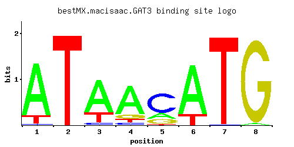

GAT3
YLR013W
Protein containing GATA family zinc finger motifs
Best-performing DNA-binding model.

View and copy the recommended matrices ↘
A | 0.854 0.002 0.732 0.750 0.170 0.814 0.001 0.019 C | 0.017 0.002 0.048 0.060 0.654 0.001 0.009 0.001 G | 0.001 0.001 0.004 0.117 0.162 0.001 0.001 0.979 T | 0.128 0.995 0.216 0.073 0.014 0.184 0.989 0.001
A | 85 0 73 75 17 81 0 1 C | 1 0 4 6 65 0 0 0 G | 0 0 0 11 16 0 0 97 T | 12 99 21 7 1 18 98 0
A | 0.98 -5.08 0.83 0.85 -0.63 0.93 -5.77 -2.82 C | -2.36 -4.50 -1.32 -1.10 1.29 -5.19 -3.00 -5.19 G | -5.19 -5.19 -3.81 -0.43 -0.11 -5.19 -5.19 1.69 T | -0.92 1.13 -0.39 -1.48 -3.13 -0.55 1.13 -5.77
Alternative candidate matrices 5
Historical matrix candidates from the original ScerTF database. Expand a source to inspect its original logo, scores, and matrix values.
GAT3Badis et. al.P = 0.01258View matrix ↘
GAT3Foat et. al.P = 7.57e-17View matrix ↘
GAT3Morozov et. al.P = 1View matrix ↘
GAT3Zhu et. al.P = 0.1239View matrix ↘
GAT3Zhao and StormoP = 4.25e-06View matrix ↘
Gene-level annotations and interactions.
Genes bound in ChIP-chip experiments 176 genes
YBL107C, YBL108W, YBL109W, YBL111C, YBL112C, YBL113C, YBR057C, YBR084C-A, YBR085W, YBR181C, YBR190W, YBR191W, YCL065W, YCL066W, YCL067C, YCL068C, YCL074W, YCR038C, YCR039C, YCR040W, YCR041W, YCR096C, YCR105W, YDL075W, YDL076C, YDL082W, YDL083C, YDL114W, YDL115C, YDL133W, YDL191W, YDL224C, YDR022C, YDR418W, YDR449C, YDR450W, YDR470C, YDR471W, YDR542W, YDR543C, YDR544C, YDR545W, YEL054C, YEL074W, YEL075C, YEL076C, YEL076C-A, YER056C-A, YER074W, YER116C, YER117W, YFL046W, YFL062W, YFL063W, YFL064C, YFL065C, YFL067W, YFR031C-A, YGL030W, YGL031C, YGL189C, YGL260W, YGL261C, YGR117C, YGR118W, YGR148C, YGR149W, YGR295C, YGR296W, YHL045W, YHL046C, YHL048W, YHL049C, YHR021C, YHR021W-A, YHR036W, YHR037W, YHR091C, YHR141C, YHR142W, YHR203C, YHR204W, YIL018W, YIL128W, YIL129C, YIL133C, YIL148W, YIL149C, YIL174W, YIL175W, YIL177C, YIR040C, YIR041W, YIR043C, YJL042W, YJL134W, YJL135W, YJL136C, YJL177W, YJL178C, YJL189W, YJL190C, YJL225C, YJR001W, YJR044C, YJR067C, YJR068W, YJR070C, YJR161C, YKL001C, YKL006C-A, YKL006W, YKL180W, YKL223W, YKL224C, YLL064C, YLL065W, YLL066C, YLL067C, YLR047C, YLR048W, YLR185W, YLR207W, YLR441C, YLR447C, YLR448W, YLR461W, YLR462W, YLR463C, YLR464W, YLR465C, YLR466W, YLR467W, YML024W, YML025C, YML026C, YML063W, YML064C, YML073C, YML132W, YML133C, YMR142C, YMR143W, YMR242C, YMR324C, YMR325W, YNL069C, YNL302C, YNL336W, YNL337W, YNL338W, YNL339C, YNR029C, YNR030W, YNR076W, YOL039W, YOL040C, YOL127W, YOL128C, YOL165C, YOL166C, YOR234C, YOR292C, YOR293W, YOR312C, YOR318C, YOR319W, YPL090C, YPL143W, YPL283C, YPR102C, YPR103W, YPR131C, YPR132W, YPR202W, YPR203W
Genes affected by TF deletion 49 genes
YHR146W, YOR377W, YPL016W, YJL050W, YBL024W, YGR211W, YBL091C-A, YAR015W, YEL020W-A, YGR160W, YHR182W, YJL095W, YLR068W, YOR043W, YMR023C, YNL248C, YFR017C, YGL111W, YGR006W, YNL182C, YOR324C, YDL201W, YDR346C, YLR129W, YMR290W-A, YNR001C, YNR038W, YNL036W, YPL254W, YLR258W, YOR272W, YKL120W, YMR235C, YNL256W, YPL030W, YPL063W, YNL160W, YER067W, YPL093W, YIL172C, YOR095C, YMR034C, YEL037C, YHR135C, YMR246W, YNL264C, YCL040W, YFL034C-B, YJL168C